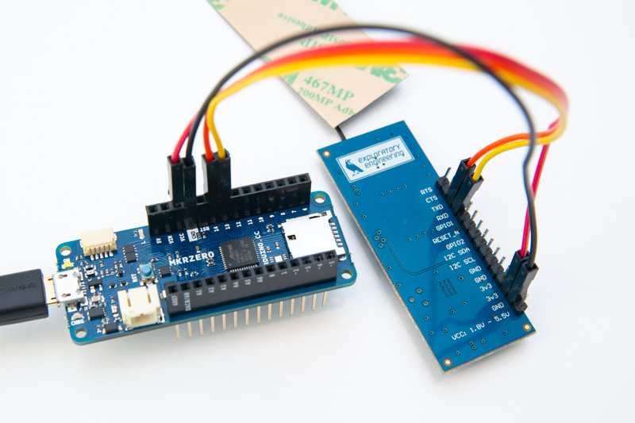
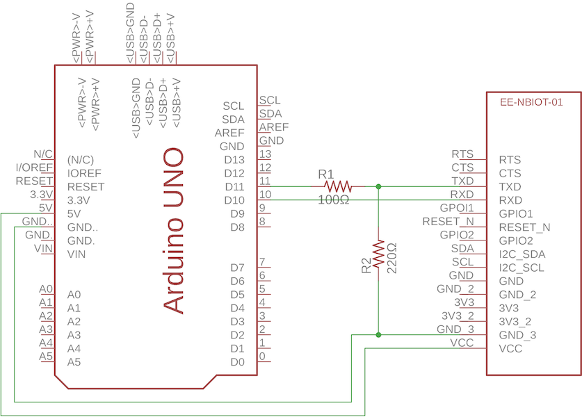

Arduino getting started
This tutorial will show you how to send data over NB-IoT from an Arduino using the Telenor EE-NBIOT-01 module. The EE-NBIOT-01 is a developer kit we’ve made to lower the barrier for experimenting with NB-IoT. It is a breakout board to the u-blox SARA-N210 radio module with a Telenor Norway SIM-card, an antenna, and a voltage regulator. The guide also relies on our self service NB-IoT Developer Platform. See our separate tutorial on how to setup a device in the NB-IoT Developer Platform. As of 1st October 2018 the platform is only enabled for Telenor Norway.
Prerequisites
- Compatible Arduino board (see 3.3V Arduino below for recommended boards)
- The EE-NBIOT-01 board
- Arduino IDE already installed
- Know how to use your Arduino board (see instructions for each board on the right side)
Connecting the EE-NBIOT-01
The serial pins for the SARA-N210 use 3.3V logic and are specified to a max of 4.25V. This means we can’t directly connect an Arduino with a 5V operating voltage to the TX pin.
3.3V Arduino
The following Arduino boards have 3.3V operating voltage and can be directly connected to the EE-NBIOT-01: Arduino Zero, Arduino MKR Zero, Arduino M0 and Arduino Duo. These boards also benefit from having extra hardware serial ports, so you don’t have to use software serial. The hardware serial pins are hooked up to Serial1 in the board’s core source file, and the pins are marked RX1/TX1 or just RX/TX on the board header connections.
In Norway you should be able to find them in any of these stores:
Pin connections:
| 3.3V Arduino | EE-NBIOT-01 |
|---|---|
| 3.3V - red | 3v3 |
| GND - black | GND |
| RX1/RX - yellow | RXD |
| TX1/TX - orange | TXD |

See image in full resolution
5V Arduino (Uno)
Arduino Uno and most other Arduino boards have 5V operating voltage. That means the digital pins also are 5V when they’re high, so if we connect a digital pin to the TX pin on the EE-NBIOT-01 we risk damaging the radio module. Because the I/O on the Arduino Uno is 5V, you need a voltage divider on TX in order not to damage the EE-NBIOT-01. Using a 100Ω resistor for R1 and a 220Ω resistor for R2 should give an output of 3.4V - which is well below the 4.25V max of the SARA-N210. Because the EE-NBIOT-01 uses 3.3V internally, RX will be 3.3V already, which is enough to trigger high on the Arduino pin. In other words we don’t need a voltage divider for RX.


See image in full resolution
Arduino NB-IoT library
Download and install our Telenor NB-IoT Arduino library. After it is installed, you will find two example sketches under:
- File
- Examples
- Telenor NB-IoT
- hello
- interactive
- Telenor NB-IoT
- Examples
hello
This example first prints out IMSI and IMEI to the serial monitor (Tools -> Serial Monitor). You need these when adding the device to the NB-IoT Developer Platform.
Then, it tries to connect to the network and send a text string “Hello, this is Arduino calling” to the NB-IoT Developer Platform.
interactive
This example presents an interactive terminal program. Upload the code and open Tools -> Serial Monitor. You should be presented with a menu. Type the letter to the left of the command you want to perform and press send. The result will be printed to the serial monitor.